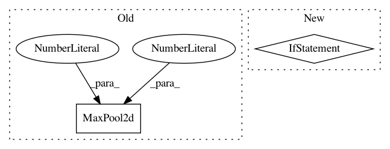

3861825719b8e6ef042799cdb7861a72e11eb3bb,pytorch/pytorchcv/models/others/oth_resattnet4.py,AttentionModule_stage1,__init__,#AttentionModule_stage1#Any#Any#,443
Before Change
ResBlock(in_channels, out_channels)
))
down_seq.add_module("down3", nn.Sequential(
nn.MaxPool2d(kernel_size=3, stride=2, padding=1),
nn.Sequential(
ResBlock(in_channels, out_channels),
ResBlock(in_channels, out_channels)
After Change
up_seq.add_module("up{}".format(i + 1), nn.Sequential(
ResBlock(in_channels, out_channels),
InterpolationBlock2(scale_factor)))
if i == 0:
skip_seq.add_module("skip1", nn.Sequential(
ResBlock(in_channels, out_channels),
ResBlock(in_channels, out_channels)))
else:
skip_seq.add_module("skip{}".format(i + 1), DoubleSkipBlock(in_channels, out_channels))
self.hg = Hourglass(
down_seq=down_seq,
up_seq=up_seq,
skip_seq=skip_seq,
In pattern: SUPERPATTERN
Frequency: 3
Non-data size: 2
Instances
Project Name: osmr/imgclsmob
Commit Name: 3861825719b8e6ef042799cdb7861a72e11eb3bb
Time: 2018-12-03
Author: osemery@gmail.com
File Name: pytorch/pytorchcv/models/others/oth_resattnet4.py
Class Name: AttentionModule_stage1
Method Name: __init__
Project Name: open-mmlab/mmdetection
Commit Name: f64c95616677f90aa79b556251d2c426ef4d07dc
Time: 2018-12-30
Author: thangvubk@gmail.com
File Name: mmdet/models/backbones/resnet.py
Class Name: ResNet
Method Name: __init__
Project Name: inferno-pytorch/inferno
Commit Name: 1add1aec0a2c9dda9dfb3e437aca70f7e05c312b
Time: 2018-08-07
Author: thorsten.beier@iwr.uni-heidelberg.de
File Name: inferno/extensions/layers/unet.py
Class Name: UNetBase
Method Name: downsample_op_factory